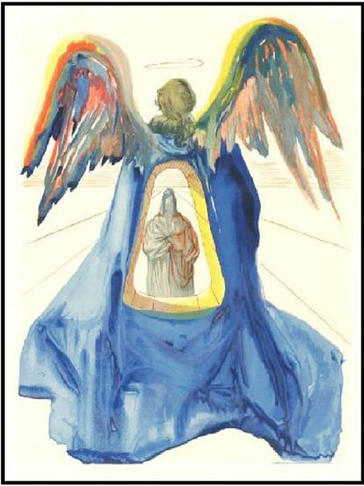
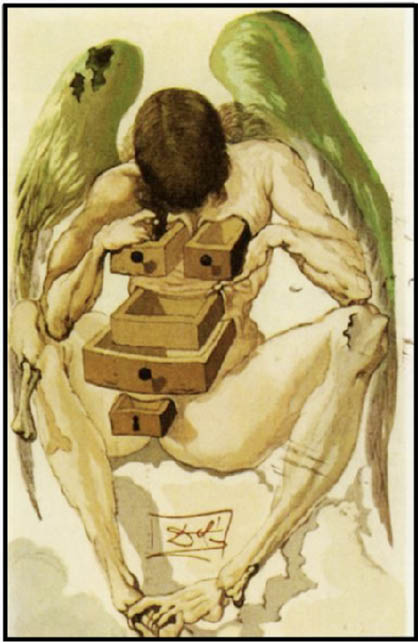

II
ŞARAP EVİNDE
Erdoğan Bey’in çiftliğinde, akşamüstü, masalsı bir atmosferde geçti. Bir köylü kadının yardımıyla inekten süt sağıldı. Folluklardan yumurta, sebze ve meyve bahçelerinden envai çeşit ürün toplandı. Hatta bir kovandan bal bile alındı.
Üç misafir ve ev sahibi, çiftliğin şarap evi diye tabir edilen binasına ulaştıklarında saat 20.00’ye yaklaşmıştı. Kavdan seçilen şarap şişelerinin de masaya konulmasıyla, yemek faslına geçilmiş oldu.
Burak, irice bir kütüğü alevlerin üzerine yerleştirdi ve Erdoğan Bey’e dönüp “Çok güzel bir yerde yaşıyorsunuz” dedi.
Ev sahibi az önce hep birlikte seçtikleri şarabı kadehlere doldururken “Teşekkür ederim, sizinle birlikte daha da güzel” diye cevapladı genç adamı.
Gizem, Erdoğan Bey’e bir kayık tabaktaki maydanozların arasına yerleştirilmiş, üzerine zeytinyağı gezdirilip limon sıkılmış yiyeceği göstererek “Bu nedir?” diye sordu.
“Kerevit Gizem Hanım” diye cevapladı güzel kızı ev sahibi, belli ki devam edecekti.
“Önümüzdeki gölden çıkıyor. Tadına bakın, eminim seveceksiniz. Ağzınıza kendi topladığınız maydanozlardan da atın. Çok yakışırlar birbirlerine. Bakın, şuradaki tabakta gördüğünüz havyar da bu gölde yetişen balıklardan alınıyor.”
Gizem “Nasıl?” diye sorunca, ev sahibi “Kızmayacaksanız anlatayım” diye cevapladı onu. Ama, güzel kızın cevabını beklemeden başladı anlatmaya:
“Adamlarım ağlarla sazan ve turnabalığı yakalıyorlar. Bunlardan, içlerinde yumurta olabilecek olanları itinayla seçip, ötekileri göle bırakıyorlar. Seçilen balıklar karınları yarılıp yumurtaları alındıktan ve yarılan yer tekrar dikildikten sonra göle bırakılıyor. Hazar Denizi kıyısında mersinbalığına yapılanın aynısı. Bizim havyarımız o kadar lezzetli olmuyorsa da kendi ürünümüz olduğu için hoşumuza gidiyor.”
Erdoğan Bey masanın üzerindeki öteki yiyecekler hakkında da bazı açıklamalarda bulunduktan sonra, içmeye başladıkları şarap hakkında konuklarının fikrini aldı.
Herkes aynı fikirdeydi, şarap muhteşemdi.
Sohbet sürerken kapı açıldı, şarap evinin yanındaki mangallardan birinde pişmekte olan etlerin bir kısmı içeriye getirildi.
“İşte beklediğim an” dedi ev sahibi ve ekledi: “Kendi etlerimizle yapılmış sucuğun lezzetine dikkat edin derim.”
Yarım saat süreyle sağlıklı yiyecekler ve hoş lezzetlerden söz edilmesine önayak olan Erdoğan Bey, zamanın gelmiş olduğunu düşünmüş olsa gerek, maharetini konuşturup hiç hissettirmeden sözü İlahi Komedya’ya getirdi.
Burak ve Gizem, adamın ustalığı karşısında birbirlerine bakıp gülümsediler.
Duran’ın dikkatini Dante’nin ölümsüz eserine çektiğinden iyice emin olunca, ev sahibi “Size bir şey soracağım” dedi üç konuğuna aynı anda.
“Dante’nin Cennet, Araf ve Cehennem’e yaptığı yolculuk, biraz Hazreti Muhammed’in yaşadığı miraç olayını andırmıyor mu?”
Gençler birbirlerine baktılar. Burak “Bilmem, öyle mi?” dedi.
Gizem “Benim de bir fikrim yok” diye cevapladı Erdoğan Bey’i.
Duran biraz düşündü. Palacios’un kitabında okuduklarından hareketle söyleyebilecek birkaç şeyi varsa da kendisine saklamaya karar verdi. Annesinin tabiriyle, neyin nesi kimin fesi olduğunu bir türlü anlayamadığı bu adamla, özellikle de bu tür hassas bir konuda, uzun boylu konuşması doğru olmazdı. Sesini çıkarmadı.
Masadakilerden dişe dokunur bir cevap çıkmayınca, Erdoğan Bey bildiklerini gençlerle paylaşmaya koyuldu:
“Benim bildiğim kadarıyla, Hazreti Muhammed gece derin uykudayken yolu bir kurt ve bir aslan tarafından kesiliyor. İlahi Komedya’da bu hayvanlara bir de panter eklendiğini görüyoruz. İslam filozofları, Peygamber’i dikenli bir bahçede ilerletiyor ve ona Cebrail’in yol gösterdiğini söylüyor. İlahi Komedya’da Dante, kendisini karanlık bir ormana sokuyor, yanına Vergilius’u alıyor. Her iki yolculukta da fokurdayan sular, alevler, derin kuyular var. Ben biraz minyatüre meraklıyım. Miraçla ilgili olanlarda, elinde kızgın çatal taşıyan ifritin ateş karıştırdığına sıkça rast geliyorum. Dante’nin Cehennem’inde de aynı anlatımlarla karşılaşıyoruz...”
Erdoğan Bey arada bir soluk alarak, Dante’nin İlahi Komedya’sı ile Hazreti Muhammed’in yaşadığı miraç olayının arasındaki benzerlikleri uzun uzun sıraladı.
Duran, adamın söylediklerinin tümüyle doğru olduğunu düşünüyordu. İlahi Komedya’yı oynamaya karar verdiğinde, bu konuda yazılmış ne varsa okumuş, dikkatini en çok çeken Palacios’un kitabı olmuştu. Aynı zamanda bir akademisyen olan İspanyol din adamı Miguel Asin Palacios, 1921 yılında gerçekleştirdiği cesur çalışmada, tam da şu anda Erdoğan Bey’in dillendirdiği konuları ele almıştı.
“Yani” diye düşündü genç oyuncu Erdoğan Bey’le ilgili olarak, “o da tıpkı benim gibi, Palacios’u iyi okumuş.”
Ve kendini tutamayıp “Dante ve İslam isimli kitabı çok iyi okumuşsunuz Erdoğan Bey” dedi.
Ev sahibi delikanlının konuşmasını biraz müstehzi buldu.
“Sadece onu değil” dedi.
Duran ısrar etti:
“Kötü bir şey söylemek istemedim. Eğer biri bir kitabı iyi okumuşsa, yazarına olduğu kadar okuruna da şapka çıkarırım.”
Erdoğan Bey gözlerini genç adamın gözlerine dikti ve samimi olup olmadığına dair bir ışık aradı. Bu süre zarfında, sürekli olarak inanmak ile inanmamak arasında gidip geldi ve “Başka bir söyleyeceğin varsa söyle” der gibi baktı.
Aslında, Duran açısından da mesele kapanmış değildi. Bir süredir kendisinde zaten “tuhaf” çağrışımlar yapan Erdoğan Bey, bir de İlahi Komedya’ya bu kadar hâkim olunca, şaşırmayıp ne yapsındı? Yetmiyormuş gibi şu anda da karşısına geçmiş “Haydi söyle bana, söyle de görelim neler düşündüğünü?” der gibi yüzüne bakıyordu. Bu durumda, konuşmak susmaktan iyi olacaktı:
“Ardavirafname hakkında da bir şeyler biliyor musunuz Erdoğan Bey?”
“Çok az” diye cevapladı tuhaf adam Duran’ın sorusunu. Şaşırtmaya devam etti:
“Ama bu soruyla kastının ne olduğunu galiba anladım. Dante nasıl Hazreti Muhammed’e yolculuk yaptıran İslam filozoflarından esinlenmişse, İslam filozofları da Ardavirafname’den etkilenmiş olabilirler mi demeye çalışıyorsun? Doğru mu anladım?”
Duran’ı Rahatsız Eden Ne?
Duran başını salladı. Bu kadarı gerçekten şaşırtıcıydı. Adamın bilgi yükü karşısında şapkasını çıkardı. Ya öteki özellikleri? Onlar yeterince şaşırtıcı değil miydi sanki?
Varoşlarda kıt kanaat geçinenlerle horoz dövüştürmek... Otuz saniyede otuz milyon dolar kazanmak... Şeytana tapanlar içinde yakın dostlara sahip olmak... Sokak çocuklarının hamiliğini üstlenmek... Dali ve gerçeküstücülük üzerine kafa patlatmak... İddialı bir resim ve eski eser koleksiyoncusu olmak...
Bütün bunlar yetmiyormuş gibi, tuhaf adam şimdi de karşısına bir ilahiyat uzmanı olarak çıkmıştı!
“Daha neler!” dedi Duran kendi kendine. Üstelik saçmalamıyordu da tuhaf adam.
İlahi Komedya’nın üzerindeki İslam etkisi, kaleme alındığından bu yana tartışılan bir konuydu. Yaklaşık yedi yüz yıldır, dünya kadar ilahiyatçı ve felsefeci ilgilenmişti bu meseleyle, ilgilenmeye de devam ediyordu.
Genç oyuncu “Aslında saçmalayan o değil, benim!” diye kızdı kendisine. Yaptığı saçmalık ise, Erdoğan Bey gibi bir adamla bu kadar iddialı bir konuyu tartışıyor olmasıydı. Tekrar düşündü ve “İşte asıl şimdi saçmaladım!” diyerek fikrini değiştirdi. Tuhaf bir adam olması, Erdoğan Bey’in de ilahiyata meraklı olan herkes gibi bu konuyu merak edip konuşmak istemesine engel olabilir miydi? “Kuşkusuz hayır” diye cevapladı kendi sorusunu Duran.
Aslında genç adamı rahatsız eden, başka bir şeydi! Birden ilahi bir ışıkla aydınlanmış gibi “Beni rahatsız eden, onun İlahi Komedya’yı tartışıyor olması değil ki!” dedi kendi kendine. Galiba canını sıkanın ne olduğunu bulmuştu.
Her şey, tam da İlahi Komedya’yı trende bulduğu anda başlamamış mıydı?
Evet, kitabın içine olağanüstü güzel bir el yazısıyla alınmış notları okumaya başladığı o talihsiz andan itibaren, hayatı allak bullak olmuştu.
Yönetmen Cebrail’in düşürdüğü (yoksa bilinçli olarak mı bırakmıştı?) kitabın kapağını kaldırır kaldırmaz, başından geçmeyen kalmamıştı.
Bütün bu olaylar silsilesi içinde en önemli rolü Erdoğan Bey oynadığı için, genç oyuncu canını sıkanın o olduğunu sanmıştı ve bu büyük bir yanlıştı.
“Ayın beşinden beri” diye düşündü Duran, “kuyruğu kapana sıkışmış fare gibi çırpınıp durmamın nedeni bu! Cebrail’in İlahi Komedya’sı!”
Burak ve Gizem, Erdoğan Bey ile Duran arasında geçmesini bekledikleri konuşma kesintiye uğrayınca şaşırdılar. Duran anlamsız bir şekilde susmuş, bu yüzden şarap evine sessizlik hâkim olmuştu.
Gizem, konuşmanın devamını sağlamak için bir şeyler söylemeyi düşündüyse de hemen vazgeçti. En başta verdikleri kararı hatırlamıştı.
Burak da aynı şekilde düşünmüştü ama tümüyle suskunluk da arzu ettikleri bir durum değildi. En iyisi, bir soru sorarak tartışmayı yeniden alevlendirmek olacaktı.
Ardavirafname de Neyin Nesi?
“Affedersiniz, Ardavirafname de neyin nesi?”
Duran arkadaşının sorusuna rağmen sessizliğini sürdürdü.
Erdoğan Bey de “Dostunuz konuyu biliyor anladığım kadarıyla, o açıklasın” diyerek kenara çekildi.
Başta Gizem olmak üzere, üç kişinin merak eden gözlerle kendisine bakıyor olması Duran’ı rahatsız etti. İçinde bulunduğu ruh ve tavır halinden bir an önce çıkmalıydı. Çabucak kendini toparladı ve konuşmaya başladı:
“Biliyorsunuz, Büyük İskender’in fethiyle İran ve çevresinde hüküm süren Zerdüştilik dininin pek çok ileri geleni öldürülmüş, yazılı kaynakları yok edilmişti. Sasaniler zamanında, dinlerini devam ettirmek isteyen bazı Zerdüştilerin ısrarı üzerine, Arda Viraf isimli bilge, yedi gün yedi gece süren bir uykuya çekildi. Bilgeye çıktığı yolculukta, Zerdüşti ulularından Suruş ve tanrı Azer eşlik etti. Tıpkı İlahi Komedya’da Dante’ye Vergilius ve Beatrice’in eşlik ettiği gibi... Bu yolculuk da aynen İlahi Komedya’da ve miraç olayında olduğu gibi cennet ve cehennemde yapıldı. Sırat köprüsünü geçmeyi başaran Arda Viraf’ın ruhu, tanrı Ahura Mazda’nın huzuruna ulaştı. Arda Viraf uykusundan uyanınca, başka bir deyişle çıktığı seyahatten geri dönünce, başından geçenleri anlattı. Sözleri bir kâtip tarafından kaleme alındı. İşte bu eserin adı Ardavirafname’dir.”
Duran sözlerini tamamlayınca, Erdoğan Bey alkışladı.
“Ancak bu kadar iyi özetlenebilirdi, onun için alkışladım. Duran’ın söyledikleri tümüyle doğru. Ardavirafname’nin kaleme alınma öyküsü aynen böyle. Ben bu kitabın, doğal olarak kendisinden sonra gelen dinlere ilham verdiği görüşündeyim. Zaman içinde Musevi, Hıristiyan ve Müslüman filozoflar bu anlatıdan hareketle çok düşündüler, çok yazdılar.”
Erdoğan Bey sözlerini tamamlayınca, Duran meselenin bir boyutu eksik kalmış ve bu da kendisini rahatsız etmiş gibi konuştu:
“Tabii bir soruyu atlamamamız lazım. Şimdi soracağım bu soru, daha önce tam olarak cevaplanamadığı gibi korkarım gelecekte de cevaplanamayacak.”
Genç oyuncu konuşmasıyla masada oturan herkesin dikkatini üzerine toplamıştı. Sıra soruyu sormaya gelmişti:
“Acaba Ardavirafname kaleme alınırken, sözlü ve yazılı hangi kaynaklardan yararlanılmıştı?”
Erdoğan Bey, delikanlının konuşmayı getirdiği noktaya bayıldı. Yine de konuşmakta acele etmedi. Kimseden bir yorum gelmeyince “Kim bilir?” dedi.
Duran şaşırdı:
“Yoksa siz de benim gibi, hiçbir zaman bilemeyeceğimizi düşünmüyor musunuz?”
“Bilemeyeceğim, demek en iyisi” dedi Erdoğan Bey.
“Peki, neden?” diye sordu Duran.
Tuhaf adam cevabını çok da istemiyormuş gibi verdi:
“Sizi anlıyorum. Bilebilecek olsaydık çoktan bilirdik, demeye çalışıyorsunuz. Başka bir deyişle, şu gök kubbenin altında bilinmedik bir şey mi kaldı, demeye getiriyorsunuz. Belki de haklısınız ama ben yüzde ikilik de olsa filozofik bir yanılma payı bırakmayı tercih ediyorum. Kim bilir, dememin nedeni bu.”
Erdoğan Bey sözlerini tamamlayınca, bu kez Duran’ın karşılık vermesini beklemedi. Sanki başka konuşulacak bir şey kalmamış gibi kadehini kaldırdı ve ürkütücü bir ses tonuyla “Haydi şimdi dünyanın her yanında yaşanan cehenneme, özellikle de İstanbul’dakine içelim!” dedi.
Duran’ın Rüyası Üzerine
Erdoğan Bey kadehini ağzına doğru götürürken, Duran pek de kolay bir lokma olmadığını hissettirmek istedi:
“Peki, acaba rüyalarımızdaki cehennem nereye ait? Bu dünyaya mı yoksa başka bir dünyaya mı?”
Duran, ev sahibinin büyüklük taslarcasına söylediği “Hadi bu konuşmayı burada noktalayalım” sözüne tepkisini böylece göstermiş oldu.
Arkadaşları patavatsızlık yaptığını ifade eden gözlerle kendisine bakmaya başlayınca, Duran başına büyük bir iş açmış olduğunu kavradı. Ama yapacak bir şey yoktu. Sözler bir kez ağzından çıkmış, olan olmuştu.
“Feci bir rüya gördüm de...” dedi bir açıklama yapmak zorunda kalmış gibi.
Duran’ın sözleri, şarap evine çöken sevimsiz havayı değiştirdi. Erdoğan Bey kaldırmış olduğu yerde tuttuğu kadehini ağzına götürmeyip masaya koydu ve “Hayırlara vesile olsun” diye cevapladı genç adamın sözlerini.
Böylece, Gizem ve Burak az önce başlayan gerginliğin tümüyle sona erdiğinden emin oldular.
Bu durumda, genç adama düşen rüyasını anlatmaktı:
“Pijamayla aşağıya inmiştim ya hani, ondan hemen önce gördüğüm rüyadan söz ediyorum. Tam bir cehennemdi.”
Açıklamasının yeterli olacağını düşünen Duran sustu. Ama herkes merak eden gözlerle kendisine bakmayı sürdürüyordu. Genç adam, tam bir felaketle karşı karşıya olduğunu anladı. Paylaşılabilecek cinsten bir rüya değildi ki gördüğü! Buna karşılık, neler söyleyeceğini merak eden üç çift göz ona bakmayı sürdürüyordu.
Genç adam rüyasına neresinden başlamalı ve ne kadarını anlatmalıydı? Gizem’den de bahsetmeli miydi sözgelimi? “Lanet olsun” dedi kendi kendine. Başını büyük derde sokmuştu. Birden, rüyasını Gizem’in yerine Beatrice’i koyarak anlatmayı akıl etti. Aslında, Gizem hariç her şeyi bütün açıklığıyla anlatabilirdi. Ne sakıncası olabilirdi ki? Hiçbir şey!
Anlattı, anlattı... Ve sıra rüyasının sonunu bağlamaya geldi:
“Ter içinde gözlerimi bir açtım ki sadece cehennem faslı değil, Tophane-i Amire kısmı da geride kalmış. Yani ne Dali’nin gerçeküstü tabloları ne de büyülü gerçeklikten eser vardı. Cebrail, Burak ve Gizem, herkes sırra kadem basmıştı.”
Burak ve Gizem aynı anda birbirlerine baktılar. Çünkü, ikisinin de aklına, Erdoğan Bey’in kahvaltıdan sonra, herkes yatağına giderken söylediği sözler gelmişti. Ne demişti adam?
“Arkadaşınız rüyasında dönüp dolaşıp konuşmayı kestiğimiz yere, yani büyülü gerçekliğe ulaşacak.”
Tam da söylediği gibi olmuştu. Burak ve Gizem “Vay canına!” diyen gözlerle birbirlerine bakadursun, Duran “Ne düşünüyorsunuz?” diye sordu.
İlk tepkiyi “Müthiş! Tıpkı bir film gibi” diyerek, Burak verdi.
Gizem ise “İlginç” diyerek yaklaştı konuya. Güzel kız, özellikle Tophane-i Amire kısmına takılmıştı. Bir de tabii, “büyülü gerçeklik” lafına.
Erdoğan Bey sözlerine az önce Duran rüyayı anlatmaya başlarken de kullandığı, “hayırlara vesile olsun” temennisiyle başladı. Bu kez uzun konuşacakmış gibi görünüyordu.
“Bence, asıl olan rüyaların dünyası. İçinde yaşadığımız dünya ise bir hayal. Tabii ki rüya âleminde başımızdan geçenlerin, bu dünyada izdüşümleri var. Rüyaları anlamaya da bu nedenle ihtiyaç duyuyoruz zaten. Rüya tabir etmeyi, sembol okumak gibi düşünmeliyiz. Uykumuzda semboller vasıtasıyla kavradığımız gerçekleri, uyandığımızda ancak mistik bir yanımız varsa çözebiliriz. Bunun için de aklımızla bağımızı koparmamız, zincirlerimizi kırmamız gerekiyor.”
Duran, tuhaf adamı ilgiyle dinledi. Babasıyla başından geçen tarot deneyimleri olmasa, Erdoğan Bey’in bu laflarının safsata olduğunu düşünür, gülüp geçerdi. Babası aklına gelince sıkıldı. Nereden girmişlerdi şimdi şu rüya işine. Bir an önce bu muhabbeti bitirmeliydi. Ama herkes onun gibi düşünmüyordu.
Burak Erdoğan Bey’e döndü ve sorusunu sordu:
“Siz nasıl yorumluyorsunuz Duran’ın rüyasını?”
Burak’ın sorusu üzerine “Eyvah” diye düşündü Duran. Konu iyice uzayacaktı anlaşılan. Bakalım Erdoğan Bey ne cevap verecekti bu soruya?
“Rüyaları açıklamaya çalışmak, sizi bilmem ama beni aşar Burak Bey.”
Duran şaşırdı. “Bu da ne demek şimdi böyle?” dedi.
Tuhaf adamın bu soruya cevabı, beklenmesi gerektiği gibi tuhaf olacaktı:
“Rüya tabirinde bulunabilmem için, rüyayı anlatanın ne gördüğünü bana tam olarak aktarabilmesi gerekir. Bu da peygamberliği gerektirir.”
Erdoğan Bey’in sözleri üzerine “Ne!” dedi irkildiğini belli ederek Duran.
Burak ve Gizem de şaşırdıklarını ifade ettiler.
“Çünkü rüya” diye devam etti tuhaf adam, “küçük çapta da olsa, vahiy inmesi anlamına gelir. Vahiy inen kişinin kendisine ne anlatılmaya çalışıldığını tam olarak anlayabilmesi bir yana, anlatabilmesiyle ilgili de sorunlar vardır.”
“Nasıl yani?” dedi Duran.
“Şöyle: Bırakın bir rüyayı anlatmayı, gözle görülüp elle tutulan olayları anlatmak bile sanıldığı kadar kolay değildir.”
“Eee” dedi gerisini de söyleyin der gibi genç adam.
“Varsayalım ki rüyayı gören tam olarak anlayabildi ve anlatabildi, bu sefer de anlatılanı anlayacak kabiliyette birine ihtiyaç doğar. Sanırım dünya yüzünde bu kabiliyette insanlar parmakla gösterilecek kadar azdır. Maalesef ben onlardan biri değilim.”
Duran “Neyse, en azından rüyam tabir edilmeyecek” diye düşündü. Gülerek “Yırttım desenize!” dedi ve devam etti:
“Ne sapık biri olduğumu söyleyeceksiniz diye korkudan ödüm patlamıştı da onun için.”
Erdoğan Bey, genç adamın yaptığı şakanın arkasına saklanarak rahatlamış olduğunu fark etti. Burak ve Gizem’e baktı. İkisi de bir sonraki aşamaya geçmeye hazır görünüyorlardı. Demek planın bir sonraki aşamasını yürürlüğe koyabilirdi.
“Ben kava inip iki şişe şarap seçeceğim, siz de mangala yeni etler konulmasını sağlar mısınız?”
Sergi Yeniden
Erdoğan Bey ve konukları yeni şarapların tadına bakıp bir süre daha havadan sudan lafladıktan sonra, sabahleyin konuştukları konuya geri döndüler.
Erdoğan Bey “Büyülü gerçeklik, demiştik sabahleyin Dali’den bahsederken, hatırlıyor musunuz?” diye sordu.
Gençler başlarını salladılar.
“O konuşmadan aklınızda en çok kalan ne oldu?
“Hoppala” diye düşündü Duran, “şimdi de öğretmen kesildi başımıza ve anlattığı konuların tekrar edilmesini istiyor.”
Tam düşüncelerini dile getirecekti ki araya Burak girdi. Dersini çalışmış bir öğrenci gibi soruya cevap verdi:
“Dali’nin aklını koruduğunu, buna karşılık iradesini askıya aldığını söylemiştik.”
Duran’ın içinden, “Hayır biz değil, Erdoğan Bey öyle söylemişti” demek geldi. Ama o düşüncelerini açıklayamadan, bu kez Gizem atıldı:
“İlahi Komedya’yı okumuş, Dali’nin resimlerini dikkatle incelemiş biri olarak, bu sözcüklerin –‘aklın korunup iradenin askıya alınması’nı kastediyorum– ressamın eserlerini mükemmel şekilde tarif ettiği görüşündeyim.”
Güzel kız, “Biraz karışık mı oldu?” der gibi baktı herkese. Sorun olmadığını anlayınca, kaldığı yerden devam etti:
“Dali, İlahi Komedya’nın fantastik dünyasında dolaşırken, iradesini askıya almış ama aklını kontrol etmeyi başarmış bir dâhi. Gökten Düşen Melek tablosu mesela... Vücuttan çıkan çekmeceler ne kadar etkileyici değil mi? Bir başkası, Arınmış Dante. Vücudun ortasındaki iri üçgen içinden görünen ilahi kişilik insanı gerçekten de çarpmıyor mu?”


Gizem’in verdiği iki örneğe Burak da eklemelerde bulundu. Konuşma giderek, ikisi arasında bilgi aktarımına dönüştü...
Gizem ve Burak bilgilerini değiştokuş ederken, Erdoğan Bey ve Duran dikkatle dinlediler.
İki genç sözlerini tamamlayınca, Duran Erdoğan Bey’e baktı ve “Söz sizin” dedi.
Ev sahibi biraz düşündü, önündeki kadehten bir yudum şarap aldı. “Sergiyi, hemen bu gece yeniden gezmek ister misiniz?” diye sordu.
Duran dökmemek için elindeki kadehi masanın üzerine koydu ve şaşkınlığını “Ne!” diyerek ifade etti.
Gizem tepkisini “Pardon, pardon, pardon!” diye dile getirdi.
Burak “Şaka ediyorsunuz herhalde, değil mi?” diye sordu.
Erdoğan Bey’in keyfi yerine gelmişti.
Tuhaf adamın yüzündeki ifade, tıpkı horozu yenildiğinde, otuz milyon dolarlık yalıyı kazandığında, şeytan ayini esnasında silahını ateşlediğinde, küçük kızı batakhaneden kurtardığında, iki insanı meşale misali yanarken gördüğünde değiştiği gibi değişti.
“Şaka etmiyorum. Sergi İstanbul’da süresini tamamlayınca Ankara’ya gitmişti. Orada da işi bitince, İstanbul’a geri döndü. Bir başka ülkeye gitmek üzere şu anda İstanbul’da bir depoda bekliyor. Ve ben, bu depoya rahatlıkla girebilirim.”
Mesele anlaşılmıştı.